My go
A Bus Manager
Introduction
Bus Management
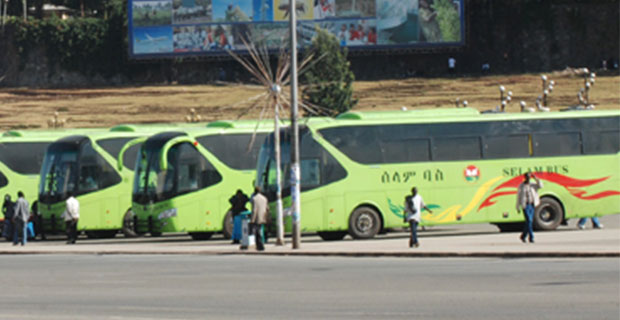Buses are used as the most widely accepted means of transporation. They provide convenient, cheap mode of transporation and hence is popular. but lack of regularization, management, increased the burden on public transporation. Having an integrated electronic management system, smothes the bus management process. As a result, this system was developled as one of the solution to transfer the current manual practices into a more systematic computerized system. MYgo allows you to take any services from transporation online whereever you are.You will only come to Bus station physically when you are ready to start a journey.
Features
Some of the features that are covered by the mygo project are described below in steps.
Information
Get information easily
In this part of the project, We have enabled the system to provide all infomation to your journey easily. You can find detail information about the bus, the driver, the co-driver, the waiter, the passenger and the trip. All you have to do is, just log in to the sytem and see your dashboard. All information which are relevant to passender is displayed properly.
Online Service
Come only to bus station when you are ready to go
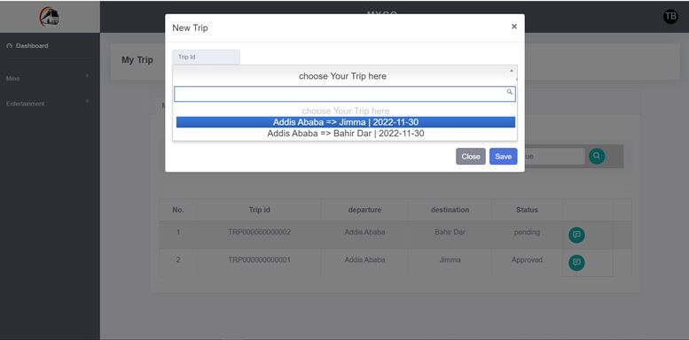One of the benefits that this bus managment system provided is its online servie. The passengers don't need to come to bus station to check the availability of the buses and to make booking. Mygo provides you online service so that using your phone, you can check the avilabiltiy of the bus to your destination in your preferred date time.
your Seat
select your favorite seat nbr
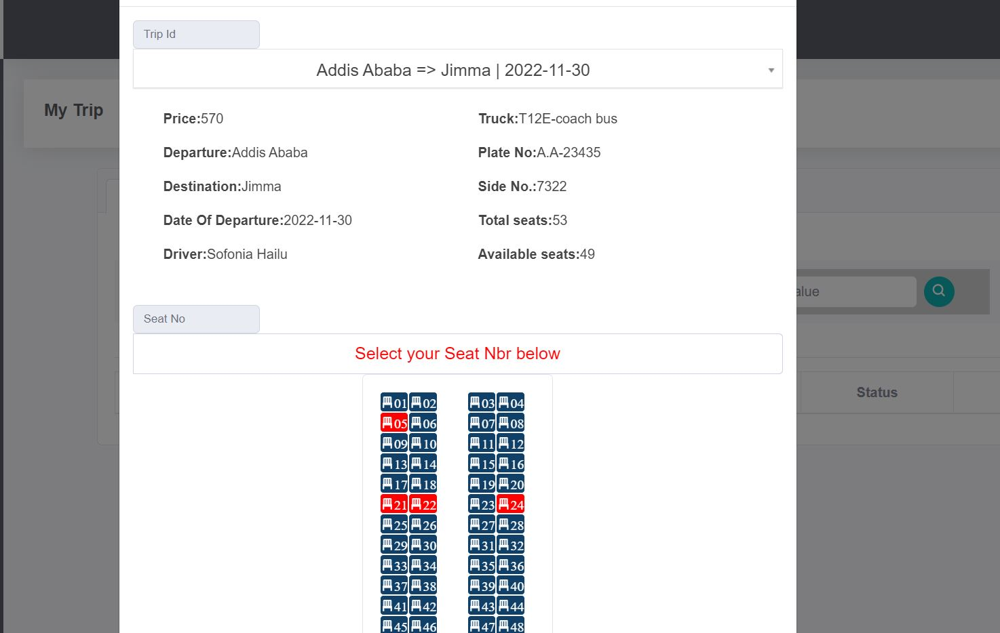In this part of the project, We have added the feature to let passengers chose your favorite seat number. Mygo displays accupied and free seat number. Thus the passenger can chose the favorite seat while they are booking.
Online Payment
Make payment Online
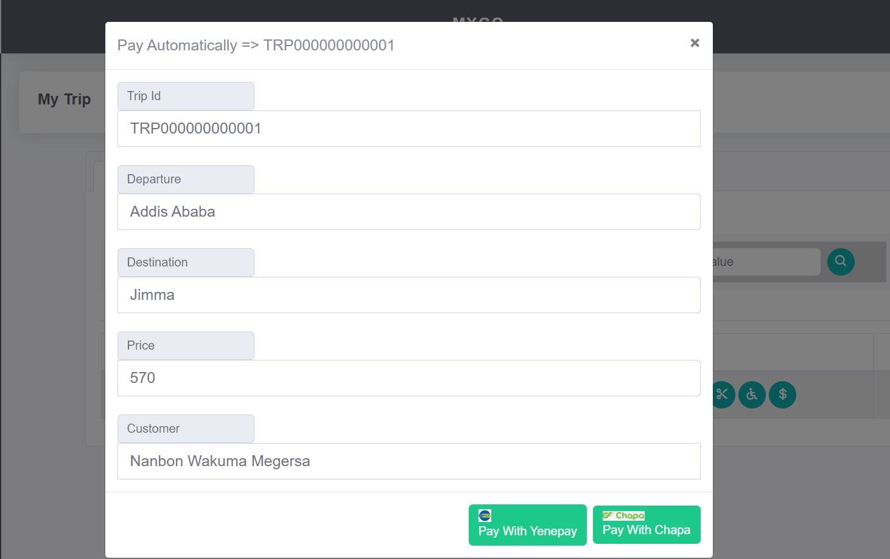In this part of the project, Mygo enables you to make payment Online from your convenient bank. You Can either use the system directly to make payment or third party system. Two of the third partey systems includes in this project are YenePay & Chapa. If you don't want a third partey systems, you can directly use mygo itself to make your payment.
Location Tracking
track your trip
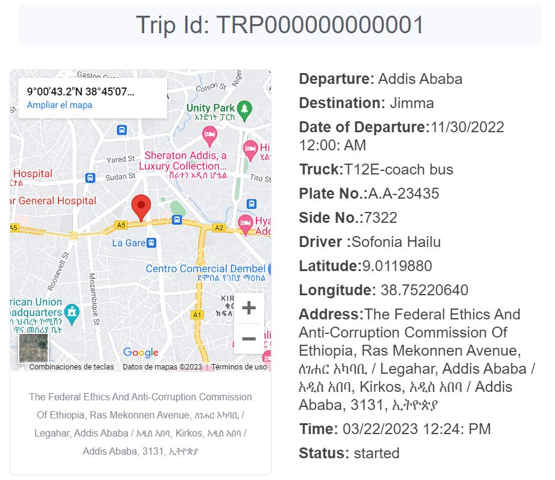mygo also provides a tracking service for your trip. It tracks the location of the bus from its departure to its destination. Once the trip has started, the system continuesly update the location your trip using GPS. It also displays the location of the truck using maps. The corresponding tracking time of the trip is also indicated along with specific locations. To make the tracking system cost effective, we have implemented GPS of mobile phone's. The system asynchronuesly displays the current location of the trip.
Confirmation
Notification through Email & SMS
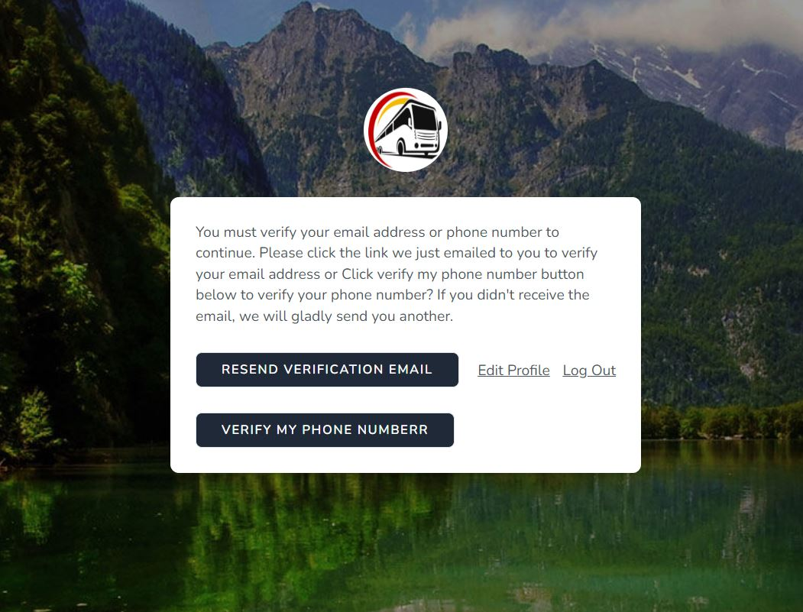mygo also sends a notification message to you throug Email & SMS. The message is either the confirmation or rejection messages about your trip. When the user first log in to the system, the system nofifys the users to confirm their Email Address & phone number.The passenger should provide a working email address & phone number to get benefited from this feature. Then important information are sent to their email addres.
Chat
text to your teammate
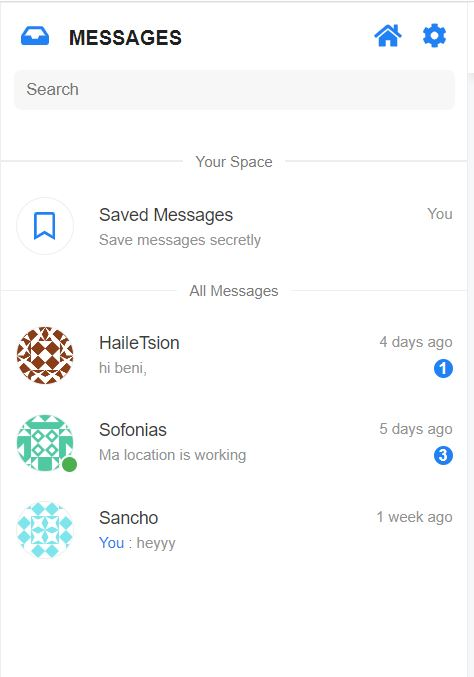In this part We have implemented chatting system to entertain the passengers while they are travelling. Mygo list out all your teammate who are in the same trip. you can text them, or you can try to find your best freind. You can search your teammate from all passengers. Note that only passengers of the same trip are your freind here. Don't feel that you are alone, talk to any of your teammate using this feature. if you are lucky, you might get your best freind. Why you only rely on social medias, mygo is also your other media. Not only text are allowed here, you can also upload and send attachements & photos. The system also shows you unseen messages and notifications. You can check whether your friend is replying to after you sent your messages.
Book
read your favourite bood
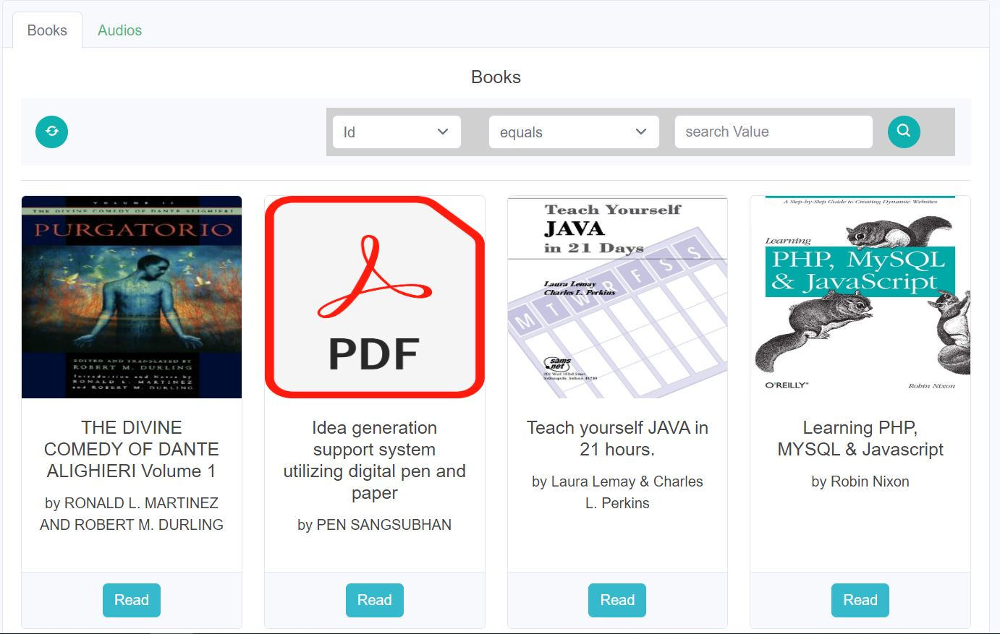In this part of the project, we have implemented book reading feature.Once you have started your trip, you can access service providers resources. One of them is an access to the latest published books which are available in bus station book store.
Audio
Listen to your favourite audio
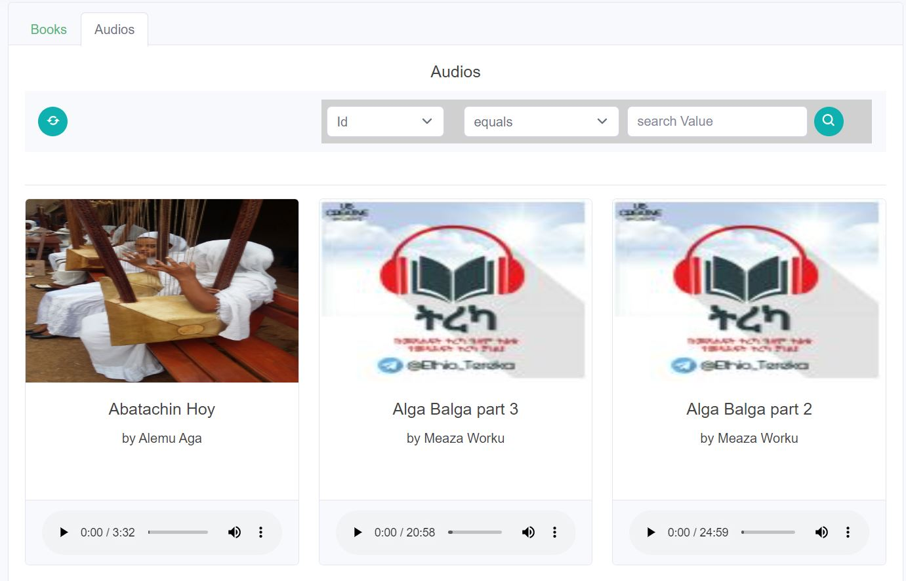Another resource of the service provider is its beautiful audios. This includes musics, narrations, spritual mezmures, etc. Listen to the best audios that are available in service provides audio store. search you favorite audio using the search bar and enjoy the moment. If you feel that the network is somehow slower, you can download and listen to the music at your convenient time. Our entertainment store will keep updating the lates audios.
Videos
watch interesting vidoes
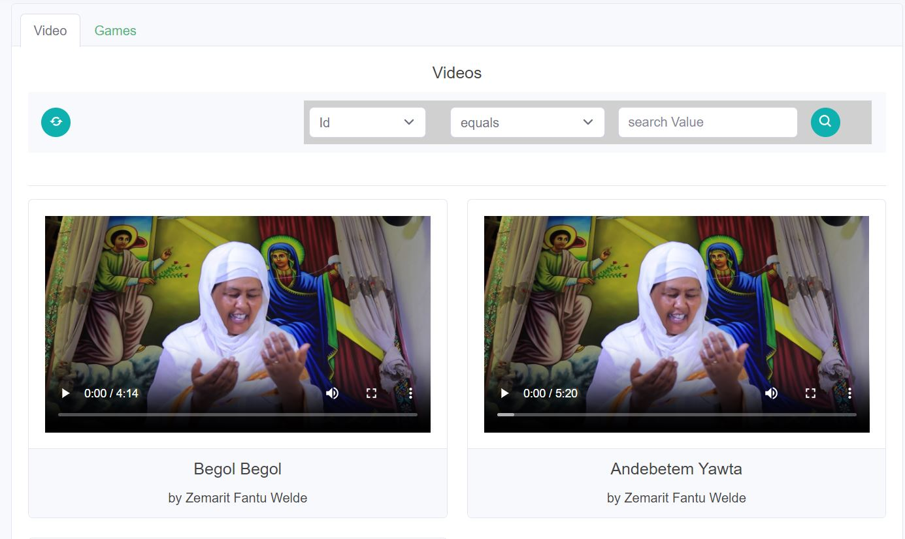In this part of the project, We have added the features to enable the passender to entertain themselves wathichg their favorite videos. this including movies, musics, news & other videos that are available in the service provides video stores. If you feel that the network is somehow slower, you can download and listen to the music at your convenient time.
Support
Ask help if you face a problem
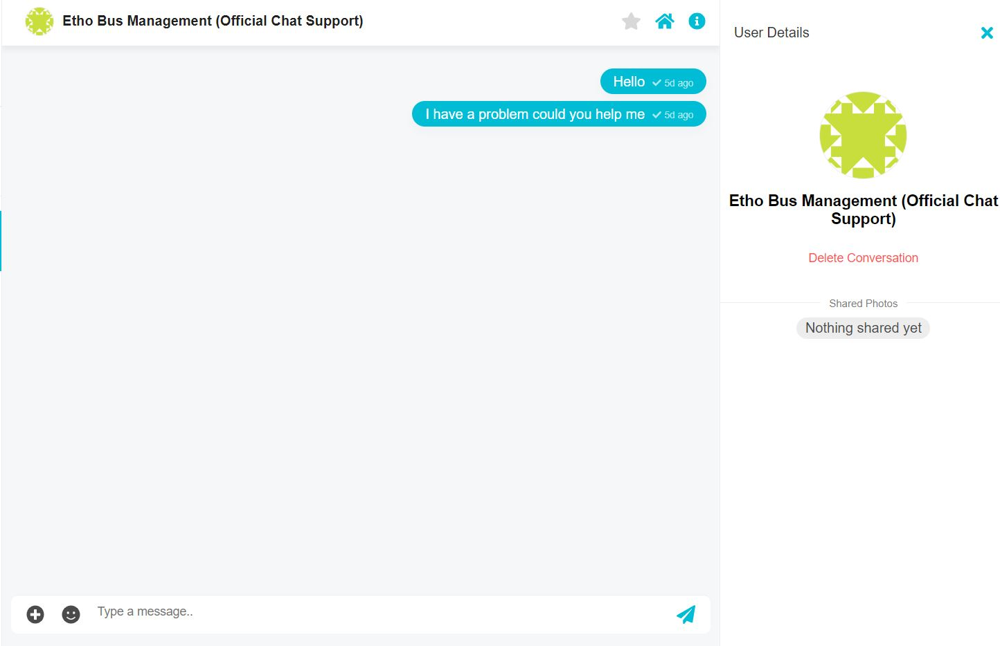 If you have any problem, you can ask the service provides throug Chat. Our Support officials will find you & fix your problem. They are ready to accept any of your question that you sent to us. In your chat list, Our offical chat support user is added automatically. You can search Ethio Bus Management support user from the list & send your questions.
Tools & frameworks
for the development of this project, I have used php programming language to code the bussiness logic. Specifically, the following frameworks are are used in this project
- laravel/framework, laravel/jetstream, livewire/livewire, munafio/chatify
- Mysql database
- Rest Api, rmccue/requests
About
Address
Addis Ababa,Addis Ketema EthiopiaPhone
(251) 940252121Social
Future Task
Due to the time limiation, I haven't completed all part of the project. In the future I will add the following features
- Adding game entertainment
- Group Chat & message broadcasting